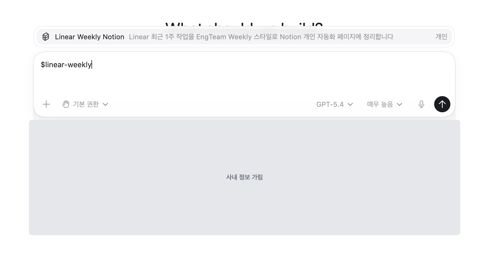
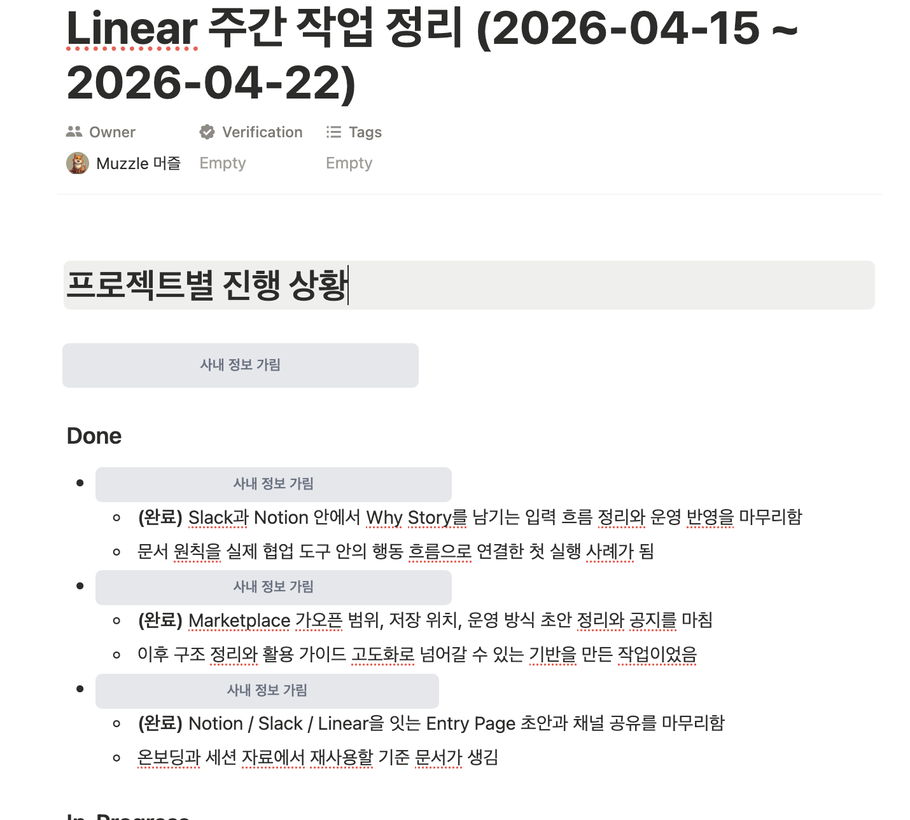
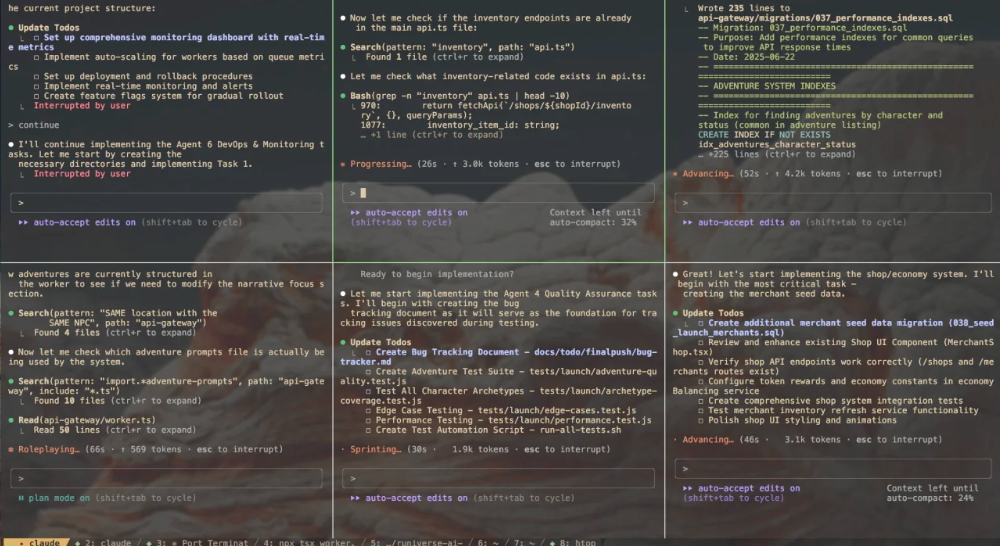
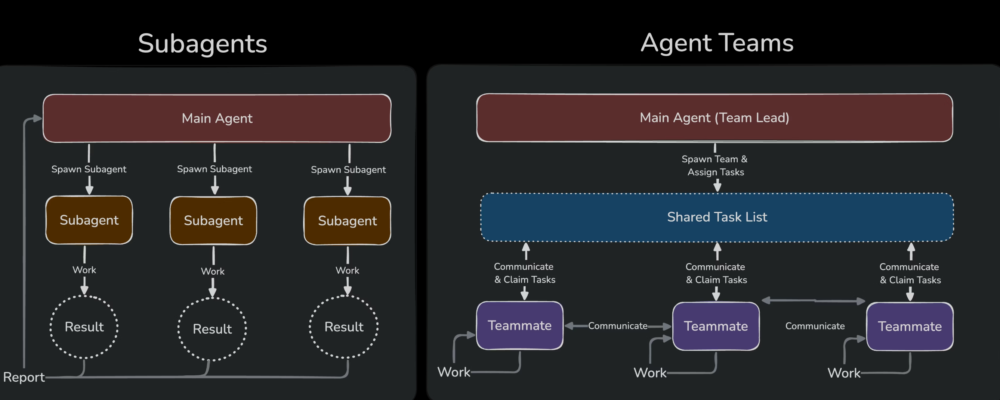

Context 개념
이미 알고 있는 Context 개념을 실무 장면에 맞게 다시 잡기
Middle Positioning Codex로 General과 Expert 사이의 중간 업무까지 다룰 수 있기 때문이다.
질문을 던지고 답변을 받는 General 도구다.
요약, 번역, 아이디어 정리처럼 결과물은 주로 대화창 안에서 나온다.
불과 1주일 전, 2026년 4월 16일 OpenAI 업데이트 이후
ChatGPT와 Codex의 통합 흐름이 더 강해졌다.
 Codex
Codex
Claude Code처럼 Codex는 코딩에 특화된 모델이다.
코드베이스를 읽고, 파일을 고치고, 명령을 실행하는 개발자 중심 도구다.
같은 Weekly 준비라도, ChatGPT는 이번 주 답변을 만들고 Codex는 다음에도 쓸 작업 흐름을 남긴다.
Codex Version


도구가 일을 대신해도, 핵심은 사람이 일을 구조화할 수 있는가에 있다.

터미널에서는 각 프로젝트의 맥락, 명령, 검증 흐름을 분리해서 동시에 진행할 수 있다.

Frontend, Backend, Plan, Reviewer, QA처럼 역할을 나누려면 목표, 기준, 완료 조건이 먼저 구조화되어야 한다.
오늘 내용을 다 잊어도, 이 한 줄만 남기면 됩니다.
좋은 Codex 사용법은 나중에 다시 활용할 수 있도록 맥락을 남기는 것입니다.
문서, 링크, 회의 메모, 결정 이유를 작업방에 남긴다.
시간이 지나도 같은 맥락을 불러와 이어서 쓴다.
내 방식으로 정리된 흐름을 팀이 다시 쓰게 만든다.